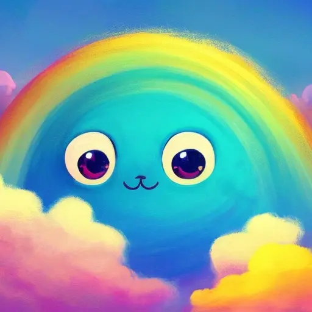

Regen und Wind
Hilferufe
Während die Abenteuergemeinschaft unterwegs ist, bemerkt sie, dass es in der Luft nach Regen riecht. Insekten und Vögel verstecken sich in den Bäumen und kurze Zeit später beginnt es auch zu regnen. Der Regen scheint nicht mehr aufzuhören und überall sieht die Abenteuergemeinschaft, wie sich Rinnsale am Waldboden bilden.
Nach ein paar weiteren Schritten, hört die Abenteuergemeinschaft entfernt Hilferufe. Wenn die Abenteuergemeinschaft den Rufen folgt, kommt sie an einen Fluss. Am gegenüberliegenden Fluss Ufer seht die Abenteuergemeinschaft viele Tiere.
Die Äste der Bäume scheinen zu einem grossen Unterschlupf verflochten zu sein, es hat überall Glühwürmchen welche die Umgebung erhellen und viele verschiedene Tiere, die alle am aufräumen und helfen sind. Die Abenteuergemeinschaft sieht auch einzelne Tiere im Fluss. Die Biber versuchen einen Damm zu bauen. Die Bären versuchen grosse Baumstämme an das Ufer zu ziehen, die Wölfe versuchen grosse Steine für einen Wall hin zu zerren. Trotz all diesen Versuchen scheint das Wasser schnell anzusteigen. Wenn die Abenteuergemeinschaft die Tiere aus dem Dorf fragen, was sie am machen sind, antworten die Tiere:
Seid gestern hört es nicht mehr auf mit dem Regen, unser kleines Dorf wird bald überschwemmt und wenn das passiert müssen wir alle von hier wegziehen. Bitte helft uns wenn ihr könnt.
Jedes Gspänli kann selbstständig entscheiden ob es hilft und für diese Aufgabe dann eine Probe machen.
Wenn die Abenteuergemeinschaft mindestens auf drei verschiedene Arten erfolgreich ist, lässt die Unruhe im Dorf nach und die Tiere aus dem Dorf zeigen sich dankbar. Wenn es der Abenteuergemeinschaft nicht gelingt, werden sie Zeuge davon wie der Unterschlupf der Tiere beschädigt wird und Teile davon vom Wasser mitgerissen werden.
Reise in den Norden
Unabhängig davon kommen nach einer gewissen Zeit kommen einige Vögel, die berichten dass der Fluss auch weiter im Norden alles überflutet. An der Spitze der Vögel ist ein Uhu. Der Uhu landet und spricht die Abenteuergemeinschaft an:
Hallo Zusammen, ich bin Umar Lauschfeder, wir brauchen hier jede Pfote, Tatze und Kralle und können nicht weg von hier. Wir wären euch zu grossem Dank verpflichtet, wenn ihr herausfinden könnt was im Norden wirklich vor sich geht.
Wenn einzelne Gspänli nicht selber fliegen können, bieten ihnen die Vögel sie zu tragen, wobei sich um jedes Gspänli ein paar Vögel kümmern. Sobald die Abenteuergemeinschaft in der Luft ist, spüren alle einen Wind vom Norden her und sehen im Norden auch Blitz und Donner. Es ist nicht ganz einfach gegen den Wind zu fliegen.
Jedes Gspänli macht unabhängig vom Rest der Abenteuergemeinschaft eine Probe um zu sehen wie gut es dem starken Wind standhalten kann. Wenn das jeweilige Gspänli nicht selber fliegen kann, sollte es den Vögeln, von dem es getragen wird, jeweils gut zureden. Wenn die Probe fehlschlägt, verliert das Gspänli 1 Ausdauer.
Die traurige Wolke
Der Regen wird immer stärker. Die Vögel landen unter einem Felsvorsprung. Umar der Uhu erklärt der Abenteuergemeinschaft:
Wir haben leider nicht die Kraft mit euch noch weiter zu fliegen. Es scheint aber, dass das viele Wasser von der Wolke da oben kommt. Das einzige was ich euch geben kann, sind 3 grossen Samen der Silber-Weide, sie können auch in der Not helfen.
Nur kurz später, erhebt sich der Uhu und die anderen Vögel und sie fliegen, nun mit dem Wind, schnell zurück in ihr Dorf.
Die Abenteuergemeinschaft kann erst mal den Berg erklimmen.
Jedes Gspänli selbständig eine Klettern Probe. Misslingt diese verliert das Gspänli 1 Ausdauer.
Erreicht die Abenteuergemeinschaft den Gipfel steht Alle nur wenige Meter unter der Wolke und hören nebst dem Blitz und Donner auch ein Weinen aus der Wolke.
Die Abenteuergemeinschaft kann auf verschiedenste Arten versuchen in die Wolke zu gelangen.
- Die Abenteuergemeinschaft pflanzt die Samen von Umar dem Uhu, aus dem eine Silber-Weide entspringt, die schnell nach oben wächst
- Die Abenteuergemeinschaft baut sich eine Leiter aus Material dass sie aus der Umgebung finden
- Die Gspänli steigen einander auf die Schultern um in die Wolke zu gelangen
- Die Abenteuergemeinschaft baut sich einen Segel Drachen um die Wolke zu fliegen
- Wenn ein Gspänli einen Samen isst, bekommst es 1 Ausdauer zurück
Wichtig ist nur, dass die Gspänli etwas gemeinsam machen. Ihr Vorgehen funktioniert dann, wenn alle Tiere gemeinsam in die Wolke gelangen können.
Wenn sich die Gspänli einander helfen, anstatt das jeder etwas für sich macht, kann die Abenteuergemeinschaft einen Freundschaftsstein zurück auf ein Herzenstier legen.
Sobald die Abenteuergemeinschaft in die Nähe der Wolke kommen, werden Alle wie in einem Sog nach oben gerissen und landen oben auf Wolke. Kaum passiert, hört der Regen auch kurzzeitig auf und die Abenteuergemeinschaft hört, wie die Wolke sie anspricht:
Hallo ihr lieben Tiere, bitte helft mir. Ich habe Angst so weit oben in den Bergen. Der Wind hat mich so hoch geblasen. Helft mir bitte wieder nach unten zu kommen.
Wenn die Gspänli genau hinhören können sie ein Singen und Pfeifen, weit oben im Himmel hören.
Der singende Wind
Die Abenteuergemeinschaft muss sich erneut überlegen wie sie noch höher kommen.
- Alle können von Wolke zu Wolke springen und werden von den anderen Wolken auch nach oben gesogen
- Die Abenteuergemeinschaft kann die traurige Wolke mit gutem zureden davon überzeugen höher zu fliegen, was nicht einfach ist, da die Wolke Höhenangst hat
- Die Abenteuergemeinschaft sieht wie unter den anderen Wolken ein Regenbogen ist, sie können diesem Regenbogen entlang klettern (??? zu fantastisch?)
Sobald die Abenteuergemeinschaft den Wind erreicht, hört der Wind auf zu singen und zu pfeifen. Der Wind spricht die Abenteuergemeinschaft an:
Huuii was macht ihr denn alle da oben, ich habe selten so nette Gesellschaft. Ihr habt bestimmt ein Anliegen?
Wenn Abenteuergemeinschaft ihm erklärt was passiert ist, möchte er genau verstehen was passiert ist und wird die Abenteuergemeinschaft um Details fragen. Der Wind wird der Abenteuergemeinschaft ein Vorschlag unterbreiten:
Ihr summt oder singt mir eine wunderschöne Melodie. Wenn mir die Melodie gefällt dann helfe ich euch und der Wolke wieder nach unten zu kommen.
Sobald die Abenteuergemeinschaft seinem Vorschlag nachkommt, beginnt der Wind nach unten zu blasen, worauf die Abenteuergemeinschaft auf die Wolke fällt und die Wolke am Berg entlang nach unten schweben kann. Die Wolke ist überglücklich und fliegt mit der Abenteuergemeinschaft zusammen zurück ins Dorf.
Wenn sie im Dorf ankommen, sehen sie alle schon von weit her wie alle Tiere am jubeln sind. Im Dorf angekommen, wird die Wolke zu einer grossen Hüpfburg für alle.
Abhängig davon wie erfolgreich die Abenteuergemeinschaft am Anfang bei der Rettung des Dorfes waren, kann sie gegebenenfalls noch helfen den Unterschlupf zu reparieren und neu aufzubauen.
Wenn die Abenteuergemeinschaft selbstständig auf die Idee kommt, den Unterschlupf wieder aufzubauen oder zu reparieren, kann die Abenteuergemeinschaft einen Freundschaftsstein zurück auf ein Herzenstier legen.
Die Gspänli kann mit der Wolke eine Freundschaft schliessen, die Gspänli müssen der Wolke aber noch einen Namen geben.
In Kürze
Hauptrollen
- Umar Lauschfeder der Uhu
- Die traurige Wolke
- Der singende Wind
Geschichte
- Die Abenteuergemeinschaft findet ein Dorf das droht überschwemmt zu werden
- Die Gspänli versuchen unmittelbar Hilfe zu leisten 🎲
- Umar der Uhu gibt ein Hinweis, warum es wahrscheinlich eine Überschwemmung gibt
- Die Gspänli fliegen zu dem Ursprungsort 🎲
- Die Gspänli versuchen auf einen Berg zu klettern 🎲
- Die Gspänli finden eine traurige Wolke, deren Tränen zur Überschwemmung führen 💗
- Die Ursache der Traurigkeit der Wolke, scheint der Wind zu sein
- Die Gspänli können den Wind davon abhalten die Wolke wegzublasen
- Die Ursache der Überschwemmung ist damit beseitigt
- Die Abenteuergemeinschaft hilft dabei das Dort aufzubauen 💗
- Die Gspänli schliessen eine Freundschaft mit der Wolke 💗
- Es gibt ein kleines Fest im Dorf